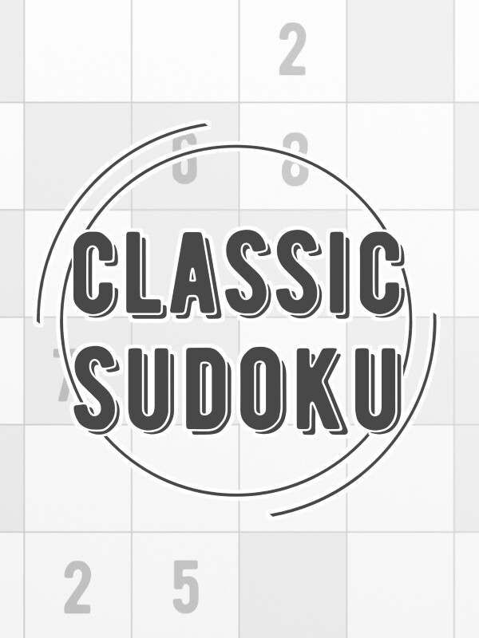

Classic Sudoku
Classic Sudoku
Details
|  | |
| Playtime | 6h 53m 0s |
| Last Activity | Never |
| Added | 12/30/2023 6:40:47 |
| Modified | 12/31/2023 8:29:59 |
| Completion Status | Played |
| Library | Steam |
| Source | Steam |
| Platform | PC (Windows) |
| Release Date | 11/25/2019 |
| Community Score | 70 |
| Critic Score | |
| User Score | |
| Genre | Indie Puzzle Strategy |
| Developer | Studio Goya |
| Publisher | Studio Goya |
| Feature | Single Player |
| Links | Steam Twitch |
| Tag | |
Description
Presented by Cracking The Cryptic, YouTube's most popular Sudoku channel, this is the brand new “Classic Sudoku” game that their viewers have been requesting for the last two years!
Simon Anthony and Mark Goodliffe, the hosts of Cracking The Cryptic, have assembled a most extraordinary collection of sudoku puzzles. The sudokus in the game cover a wide range of difficulty with something for everyone - and also require an incredible range of techniques to solve them efficiently! Each of these special puzzles had to qualify for inclusion in the game by passing our rigorous play-testing - a test that NO other sudoku game on the market would pass. This play-testing ensures that a human being has actually thought about the journey you, the solver, will go on as you work through the puzzle. No computer testing here!
Indeed our more advanced puzzles have been carefully designed to showcase some of the diabolical techniques in an intuitive way with the aim of helping solvers UNDERSTAND the patterns involved.
In Cracking The Cryptic’s games, players start with zero stars and earn stars by solving puzzles. The more puzzles you solve, the more stars you earn and the more puzzles you get to play. Only the most dedicated (and cleverest) sudoku players will finish all the puzzles!
Featured authors include (obviously) Simon and Mark but also some other authors who have produced popular puzzles on the channel!
Mark and Simon have both represented the UK many times in the World Sudoku Championship and you can find more of their puzzles (and lots of others) on the internet’s biggest sudoku channel, Cracking The Cryptic.
Features:
Simon Anthony and Mark Goodliffe, the hosts of Cracking The Cryptic, have assembled a most extraordinary collection of sudoku puzzles. The sudokus in the game cover a wide range of difficulty with something for everyone - and also require an incredible range of techniques to solve them efficiently! Each of these special puzzles had to qualify for inclusion in the game by passing our rigorous play-testing - a test that NO other sudoku game on the market would pass. This play-testing ensures that a human being has actually thought about the journey you, the solver, will go on as you work through the puzzle. No computer testing here!
Indeed our more advanced puzzles have been carefully designed to showcase some of the diabolical techniques in an intuitive way with the aim of helping solvers UNDERSTAND the patterns involved.
In Cracking The Cryptic’s games, players start with zero stars and earn stars by solving puzzles. The more puzzles you solve, the more stars you earn and the more puzzles you get to play. Only the most dedicated (and cleverest) sudoku players will finish all the puzzles!
Featured authors include (obviously) Simon and Mark but also some other authors who have produced popular puzzles on the channel!
Mark and Simon have both represented the UK many times in the World Sudoku Championship and you can find more of their puzzles (and lots of others) on the internet’s biggest sudoku channel, Cracking The Cryptic.
Features:
- 40 beautiful puzzles on launch
- 5 new levels every month for the first year (a total of 100 levels!)
- Hints written by Mark and Simon!